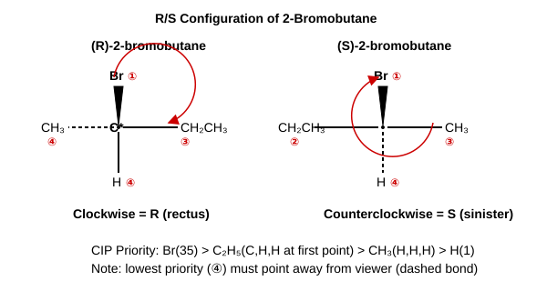
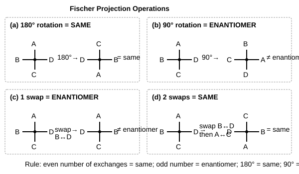
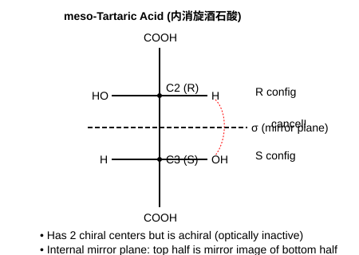
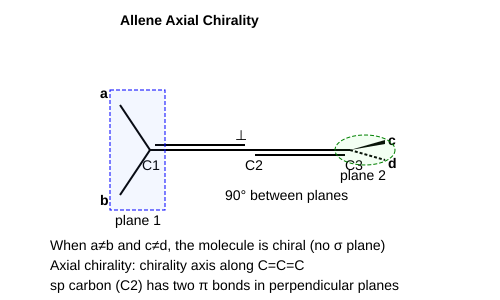

第4章 对映异构
核心知识点
4.0 异构体分类总览
异构体分类体系
同分异构体（分子式相同，结构不同）分为：
- 构造异构（原子连接顺序不同）
- 碳骨架异构：碳链不同（如正丁烷 vs 异丁烷）
- 官能团异构：官能团种类不同（如乙醇 vs 二甲醚）
- 位置异构：官能团位置不同（如1-丙醇 vs 2-丙醇）
- 立体异构（原子连接顺序相同，空间排列不同）
- 构象异构：单键旋转引起（能垒低，室温快速互变）
- 构型异构：需断键才能互变
- 顺反异构（几何异构）：双键或环上取代基的位置关系
- 对映异构（光学异构）：互为不可重叠镜像
"构造"、"构型"、"构象"三概念辨析
• 构造(Constitution)：原子间的连接方式（谁和谁相连）
• 构型(Configuration)：原子在空间的固定排列，改变需断键（如R/S、E/Z）
• 构象(Conformation)：单键旋转产生的不同空间形态，室温可自由互变（如交叉式/重叠式）
考试易混点：构型异构体是可分离的不同化合物；构象异构体在通常条件下不可分离（互变太快）。
4.1 手性与手性碳
基本概念
- 手性(Chirality)：分子与其镜像不能重叠的性质
- 手性碳(C*)：连接四个不同基团的sp3碳原子
- 对映体(Enantiomers)：互为镜像且不能重叠的一对异构体
- 非对映体(Diastereomers)：立体异构体但不是对映体
沙利度胺事件：R型=镇静安眠，S型=致畸。手性药物必须拆分的经典案例。
4.2 R/S构型标记
CIP规则三步法
- 按CIP次序规则排列四个基团优先级：a > b > c > d
- 将最小基团d放到最远处（离眼睛最远/朝纸面后方）
- 从a→b→c的方向：顺时针=R，逆时针=S

当d不在后方时的技巧：
• 方法1：交换d到后方（交换两个基团=构型反转，交换两次=恢复）
• 方法2：按原位判断顺逆，若d在前方则结果取反（R↔S）
D/L标记法：仅用于糖和氨基酸。D/L指的是Fischer投影式中最下面手性碳上OH的位置（右=D，左=L）。D/L与R/S无固定对应，D/L与(+)/(-)也无直接关系！
4.3 旋光性
比旋光度
$$[\alpha]_\lambda^T = \frac{\alpha}{c \times l}$$
$\alpha$=实测旋光度，$c$=浓度(g/mL)，$l$=样品管长(dm)。比旋光度是物质的固有常数。
对映体过量(ee%)
$$ee\% = \frac{|[R]-[S]|}{[R]+[S]} \times 100\% = \frac{|\alpha_{\text{obs}}|}{|\alpha_{\text{pure}}|} \times 100\%$$
旋光方向与构型无关：R不一定是(+)右旋，S不一定是(-)左旋。旋光方向只能由实验测定。
4.4 Fischer投影式（高频考点！）
基本规则：横前竖后
横线上的基团朝向观察者（伸出纸面），竖线上的基团远离观察者（伸入纸面）。
操作规则（必记！）
| 操作 | 结果 | 原因 |
|---|
| 旋转180° | 同一化合物 | 等价于偶数次交换 |
| 固定一个基团，转其余三个 | 同一化合物 | 相当于空间中旋转分子 |
| 旋转90° | 对映体 | 等价于奇数次交换 |
| 交换任意两个基团 | 对映体 | 一次交换=构型翻转 |
| 交换两次（4个基团中任意两对） | 同一化合物 | 两次翻转=恢复 |
| 翻面(上下翻转) | 不允许！ | 破坏横前竖后规则 |

Fischer投影式判R/S：
① 将最小基团(通常H)放到竖线上方或下方（用"固定一个转三个"操作）
② H在竖线上=H朝后方 → 直接按a→b→c判R/S
③ 若H在横线上=H朝前方 → 判完后取反
4.5 对称因素与手性判断
判断手性的对称因素
- 对称面(σ)：将分子分为互为镜像的两半 → 有对称面 = 无手性
- 对称中心(i)：通过中心点连线两端对应的原子 → 有对称中心 = 无手性
- 对称轴(Cn)：不能单独判断手性！有些有C2轴的分子仍有手性
三大易错点
• 有手性碳 ≠ 有手性：内消旋体(meso)有手性碳但有对称面 → 无手性
• 无手性碳也可有手性：丙二烯型(如丙二烯二取代)、联苯轴手性、螺环手性
• 对称轴不能判手性：酒石酸有C2轴但仍有手性
4.6 含多个手性碳的异构体
异构体数目
n个不同手性碳 → 最多 $2^n$ 个旋光异构体
含相同取代手性碳(A-A型) → 存在内消旋体(meso)，实际数 < $2^n$
异构体关系总结
| 关系 | 定义 | 物理性质 | 旋光 |
|---|
| 对映体 | 互为镜像不可重叠 | 除旋光方向外完全相同 | 旋光度等大反向 |
| 非对映体 | 立体异构但非镜像 | 物理性质不同 | 旋光度不同 |
| 内消旋体 | 分子内有对称面 | 无旋光性 | $[\alpha]=0$ |
| 外消旋体 | 等量对映体混合物 | 无旋光性 | $[\alpha]=0$ |

内消旋 vs 外消旋：
• 内消旋(meso)：一个化合物，分子内对称抵消 → 不可拆分
• 外消旋(racemic)：两个对映体的等量混合物 → 可通过拆分分离
4.6b 环状化合物的对映异构
环状化合物手性判断原则
环上取代基的顺/反关系直接影响对称性，进而决定分子是否有手性。
奇数环（以环丙烷1,2-二取代为例）
- 顺式（两个取代基在环平面同侧）：分子存在对称面（过C3垂直于C1-C2连线的平面）→ 无手性，无旋光性
- 反式（两个取代基在环平面异侧）：无对称面 → 有手性，存在一对对映体
偶数环（以环丁烷1,2-二取代为例）
- 需具体分析对称因素，不能简单套用奇数环结论
- 顺-1,2-二甲基环丁烷有对称面→无手性；反-1,2-二甲基环丁烷无对称面→有手性
环己烷的特殊情况（构象翻转影响手性！）
| 化合物 | 构象翻转效果 | 手性/旋光性 |
|---|
| 顺-1,2-二甲基环己烷 | 翻转后实物变为原来的镜像 | 外消旋体→无旋光性 |
| 反-1,2-二甲基环己烷 | 翻转后不产生镜像（仍是同一对映体） | 有旋光性，可拆分 |
重点理解：顺-1,2-二甲基环己烷的任一构象虽无对称面（看似有手性），但因构象快速翻转使两种构象等量互变（实物⇌镜像），宏观表现为外消旋→不旋光。这是"构象外消旋"的典型例子。
4.6c 不含手性碳的手性化合物
丙二烯型（累积二烯手性/轴手性）
- 结构：C=C=C，中心碳为sp杂化，两端各连两个基团
- 两端平面互相垂直 → 当两端取代基分别不同(ab≠cd)时，无对称面 → 有手性
- 例：1,3-二甲基丙二烯 (CH3CH=C=CHCH3) 有对映体
联苯型（阻转异构/轴手性）
- 两个苯环间单键旋转被邻位大基团阻碍 → 不能自由旋转 → 两环不共面
- 条件：邻位取代基足够大（如NO2、COOH、Br等），使旋转能垒 > ~100 kJ/mol
- 当两苯环各含不同取代基且缺乏对称面时 → 有轴手性
螺环手性
- 两个环共用一个碳（螺原子），两环平面互相垂直
- 当两环各自不对称取代时 → 无对称面 → 有手性
杂原子手性
- 手性氮：季铵盐 $\text{N}^+abcd$，四个不同基团 → 有手性（普通胺因快速翻转无法拆分）
- 手性磷：膦(Pabcd)翻转能垒高 → 可拆分手性磷化合物
- 手性硫：亚砜(R1SOR2)，硫上有孤对电子作为第四个"基团"

记忆要点：不含手性碳的手性来源 = 轴手性（丙二烯、联苯）+ 螺环手性 + 杂原子手性。关键是找对称面，无对称面即有手性。
4.7 构型表示法互转
四种表示法
楔线式(wedge-dash) ↔ Fischer投影式 ↔ Newman投影式 ↔ 锯架式(sawhorse)
Fischer→楔线式：横线上的基团用楔形键(朝前)，竖线上的基团用虚线键(朝后)。反过来也一样。
4.8 反应产物的立体化学
meso化合物反应后的立体化学变化
- 内消旋体(meso)含有对称面，无旋光性
- 若反应使对称面消失（如氧化一个手性碳上的取代基）→ 产物失去内部对称 → 生成一对对映体
- 例：meso-酒石酸的一个-OH被氧化 → 对称面被破坏 → 产物有旋光性
外消旋体的加成反应
- 外消旋体加氢（如含C=C的手性分子）→ 新手性碳产生
- 可能的产物：一对新的对映体 + 内消旋体（取决于加成方向和底物对称性）
- 关键：分析加成后各手性碳的R/S组合，判断是否出现对称面
解题思路：先画出反应前后手性碳的变化；再检查产物有无对称面；最后判断对映体/非对映体/内消旋体关系。
4.9 获取手性分子的方法
获取光学纯手性化合物的主要途径
| 方法 | 原理 | 特点 |
|---|
| 天然产物分离 | 生物体中酶催化具有立体专一性 | 来源有限，仅能得到一种对映体 |
| 外消旋体拆分 | 利用手性试剂将对映体转为非对映体（物理性质不同）后分离 | 最多得到50%目标产物；常用手性酸/碱拆分 |
| 不对称合成 | 手性辅基或手性催化剂诱导，使反应优先生成一种对映体 | 原子经济性高，可大量制备 |
| 不对称催化 | 手性催化剂（如BINAP-Ru、脯氨酸）控制过渡态面选择性 | 催化量手性源即可，效率最高（诺贝尔奖2001） |
拆分原理：对映体物理性质相同无法直接分离 → 加入手性试剂D → (R)+D与(S)+D成为非对映体 → 非对映体性质不同 → 结晶/色谱分离 → 除去D得纯对映体。
课后习题精选
4. 判断关系：判断各对化合物是什么关系(同一物质/对映体/非对映体)。
(1) 对映体 (2) 同一物质 (3) 对映体 (4) 同一物质 (5) 对映体 (6) 同一物质 (7) 非对映体 (8) 同一物质
方法：将两个Fischer式通过允许的操作(180°旋转、固定一个转三个)尝试互相转化。能转化=同一物质；不能转化看每个手性碳R/S是否全反=对映体；部分反=非对映体。
5. 判断内消旋：判断哪些是内消旋体、对映体、相同化合物。
内消旋体：(1)(2)(7)(8) — 含对称面，虽有手性碳但无旋光性
对映体：(3)和(4)、(5)和(6) — 所有手性碳构型相反
相同化合物：(1)和(2)、(7)和(8) — 都是同一内消旋体
8. 自由基氯代的立体化学：(R)-(+)-1-溴-2-甲基丁烷自由基氯代，产物的立体化学如何？
该分子有1个手性碳(C2)。自由基氯代可在不同位置发生：
• 若氯代发生在手性碳上 → 自由基中间体为sp2平面 → 新手性碳外消旋化
• 若氯代发生在非手性碳上且产生新手性碳 → 新手性碳外消旋，原有手性碳保持构型
总共7种产物，6个馏分（其中一对对映体作为外消旋体算一个馏分）。
9. 光学纯度计算：混合物实测旋光度为+10.14°，纯品旋光度为+52.72°。求ee%和各对映体比例。
$ee = \frac{10.14}{52.72} \times 100\% = \mathbf{19.2\%}$
设右旋体比例为x，左旋体为(1-x)：
x - (1-x) = 0.192 → x = 0.596
右旋体 = 59.6%，左旋体 = 40.4%
11. 比旋光度计算
$[\alpha] = \frac{+2.3}{1.0 \times 0.1} = +23°$
第二次：$[\alpha] = \frac{+1.15}{0.5 \times 0.1} = +23°$
比旋光度是固有常数，与管长和浓度无关。改变浓度或管长只改变实测旋光度$\alpha$。
综合：2,3-二溴丁烷有几种立体异构体？哪些有旋光性？
2,3-二溴丁烷含两个相同取代的手性碳(A-A型) → 存在内消旋体
异构体：
(1) (2R,3R)-2,3-二溴丁烷 → 有旋光性
(2) (2S,3S)-2,3-二溴丁烷 → 有旋光性（与1互为对映体）
(3) meso-2,3-二溴丁烷 → 无旋光性（有对称面）
共3种立体异构体（而非$2^2=4$种），2种有旋光性。
12. R/S构型标记（综合）：指定下列分子各手性碳的R/S构型：
(2R,3S)-2-氨基-3-羟基丁二酸（苏氨酸类似物），其结构为 HOOC−C*H(NH
2)−C*H(OH)−COOH。
提示：先按CIP规则排序每个手性碳的四个取代基，注意−COOH > −C(连有NH
2的碳) > −OH > −H 等优先级比较。
C2手性碳（连有NH2）：四个基团为 −NH2、−COOH、−CH(OH)COOH、−H
优先级：NH2(N原子序数7) > COOH(直连O) > CH(OH)COOH(直连C) > H
将H放到后方，a→b→c为NH2→COOH→CH(OH)COOH，方向为逆时针 → S...但题目给出2R，说明需更仔细比较实际空间排列。
C3手性碳（连有OH）：四个基团为 −OH、−COOH、−CH(NH2)COOH、−H
优先级：OH(O原子序数8) > COOH(直连O,O) > CH(NH2)COOH(直连C,但第二层有N) > H
将H放到后方，a→b→c为OH→COOH→CH(NH2)COOH，方向为顺时针 → R...题目给出3S，同理需确认空间。
关键：实际操作中需根据楔线式或Fischer投影式确定空间排列后再判，此处练习重点是CIP优先级排序的熟练度。
13. 识别内消旋体：下列化合物中哪些是内消旋体？
(A) (2R,3S)-2,3-二氯丁烷
(B) (2R,3R)-2,3-二氯丁烷
(C) (2R,3S)-2,3-二氯戊烷
(D) 顺-1,3-二甲基环戊烷
(E) (1R,2S)-1,2-二甲基环己烷
(A) 是内消旋体：2,3-二氯丁烷为A-A型（C2和C3取代基相同：CH3、Cl、H），(2R,3S)构型中存在对称面 → meso
(B) 不是：(2R,3R)无对称面，是有旋光性的对映体之一
(C) 不是：2,3-二氯戊烷中C2和C3取代基不完全相同（C2连CH3，C3连CH2CH3），不是A-A型 → (2R,3S)没有对称面 → 不是meso，是非对映体之一
(D) 是内消旋体：顺-1,3-二甲基环戊烷有一个过C2垂直于C1-C3连线的对称面 → 无手性
(E) 是内消旋体：(1R,2S)-1,2-二甲基环己烷中两个手性碳构型相反且取代基相同，分子含对称面 → meso
答案：A、D、E
考前提醒
R/S判断必须熟练：CIP排序→d放后方→顺R逆S。若d不在后方，判完取反。
Fischer投影式操作：180°旋转=同一物质；90°旋转=对映体；交换一对=对映体
有手性碳≠有手性：内消旋体有手性碳但有对称面→无手性→不旋光
内消旋vs外消旋：内消旋=一个分子(不可拆分)；外消旋=混合物(可拆分)
D/L与(+)/(-)无关，D/L与R/S无关
ee%计算：ee=|观测旋光度|/|纯品旋光度|×100%
异构体计数：n个不同手性碳→$2^n$种；有相同手性碳(A-A型)→要减去内消旋体
对称面是判断手性的王牌：找到对称面=无手性。对称轴不能单独判断！